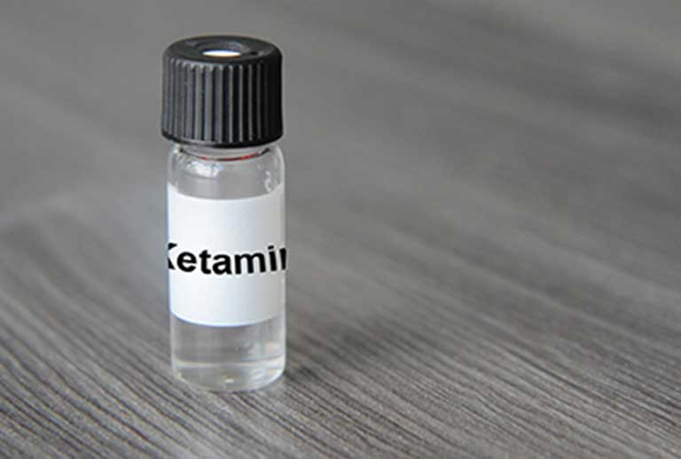

Ketamina

Características:
Efectos Físicos:
- Intoxicación aguda
- Aumento del ritmo cardíaco y la respiración
- Pérdida de conciencia, coma.
- Espasmos musculares, movimientos repetitivos, arrebatos (comportamiento automático) .
- Dolores de estómago.
- Muchos efectos están polarizados entre los usuarios (es decir_ los informes de respuestas opuestas en diferentes individuos)
-
Lesiones
- Mayor riesgo de lesiones de saltar desde alturas_ accidentes de tráfico y los ahogamientos; asociados con la pérdida de la coordinación/parálisis temporal y/o efectos disociativos (por ejemplo_ despersonalización_ y la reducción de la percepción del dolor)
- Orgánico/neurológica
- Alucinaciones_ percepción sensorial distorsionada.
- Deterioro de atención, memoria y aprendizaje.
- Percepción alterada del cuerpo.
- Alteraciones de la función cognitiva y la fluidez verbal.
-
Personalidad / estado de ánimo
- Confusión.
- Despersonalización.
- Desrealización.
- Ataques de pánico, agitación, paranoia.
- Delirio.
- Depresión.
- Terrores nocturnos.
- Efectos en el comportamiento se asemeja ciertos síntomas de la esquizofrenia.
- Pérdida extrema de las habilidades motoras (catatonia).

Prevalencia de consumo / región